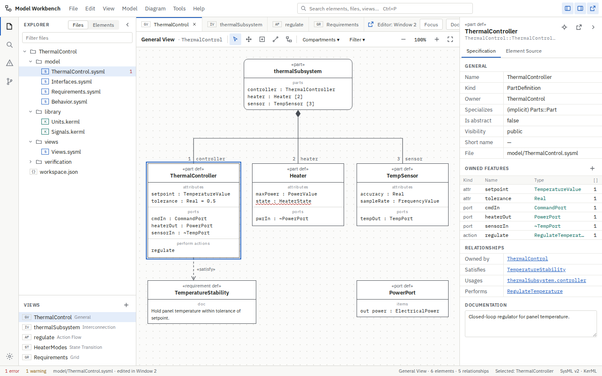
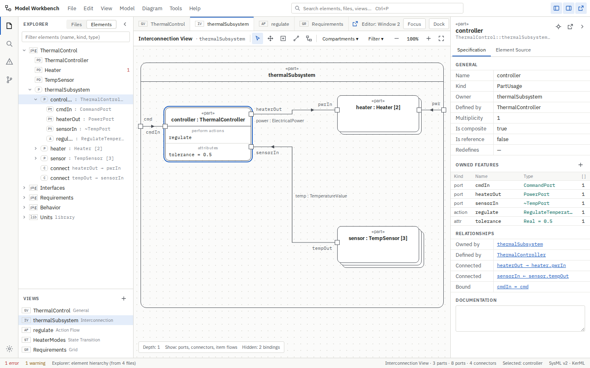
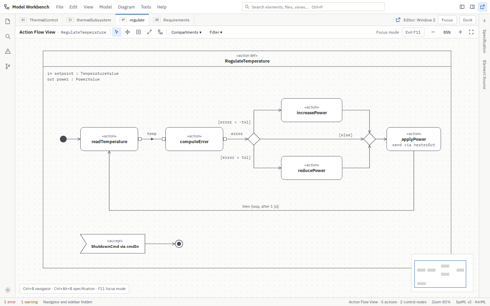
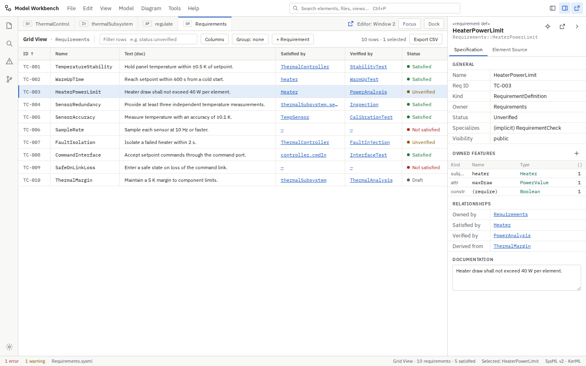
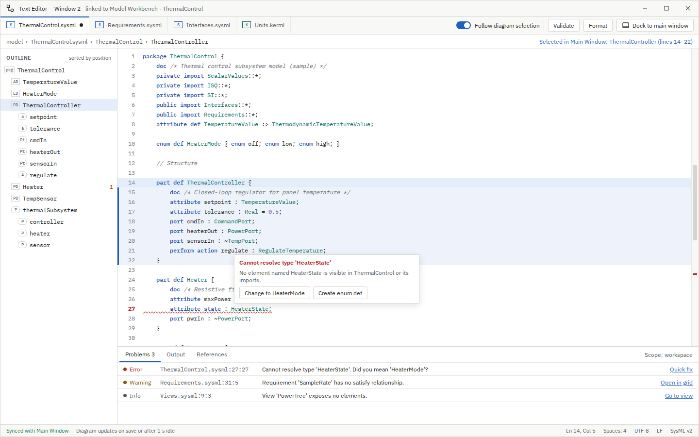

Model Workbench: UI mockup
A reference mockup for an engineering application that edits .sysml and .kerml files and renders SysML v2 graphical views and tables. The diagram gets the main display. The text editor lives in a separate window. The navigator and sidebar can be moved out of the way.
Each screen is a fixed 1440 × 900 frame. The HTML is static, and assets/workbench.js adds the clickable behavior. See README.md for the layout map, interaction model and design tokens.
Screens

1 · Main workspace (clickable)
Files / Elements explorer switch, hide and show panels, select diagram elements, Specification and Element Source tabs.

2 · Element hierarchy + Interconnection View
Explorer tree built from model content; parts, ports, connectors and item flows.

3 · Focus mode
Navigator hidden, sidebar collapsed to a strip; Action Flow View at full width.

4 · Grid View
Requirements table with filter, columns, status and trace links.

5 · Pop-out text editor
Second window: full-file editing, selection sync, diagnostics, dock back.
Other states of screen 1
Screenshots of these states are in screenshots/01b…01d.